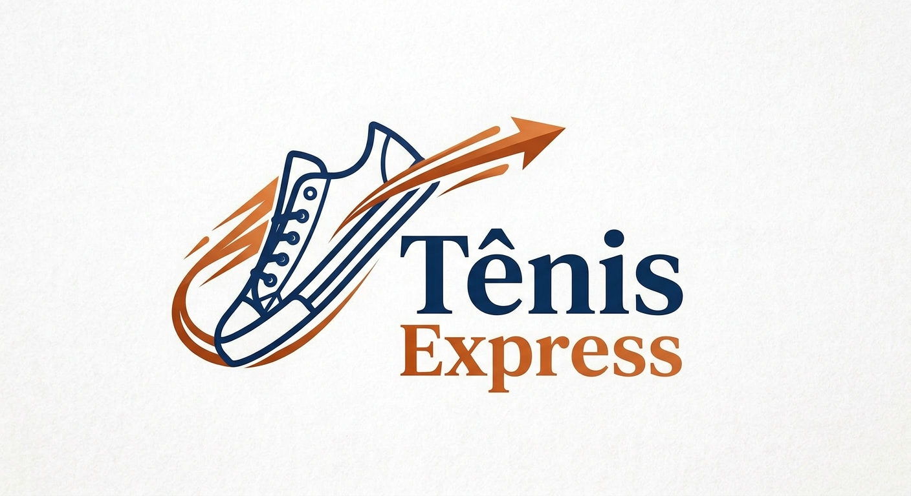

Tudo começou durante a pandemia, em um momento em que o mundo precisou desacelerar e muitos sonhos começaram a ganhar novos caminhos. Foi nesse período que nasceu uma vontade simples, mas muito forte: tornar mais fácil o acesso aos tênis que tantas pessoas desejavam ter.
A paixão por tênis, que começou como um interesse pessoal, logo se transformou em um propósito. Percebemos que, para muitos entusiastas e colecionadores, encontrar aquele modelo desejado nem sempre era uma tarefa fácil.
Foi então que decidimos transformar esse desejo em realidade e fundamos o TênisEspress, com a missão de aproximar você do mundo dos calçados de uma forma simples, acessível e confiável.
“Mais do que vender tênis, queremos fazer parte da história de cada cliente, ajudando a encontrar aquele par que combina com seu estilo e personalidade.”